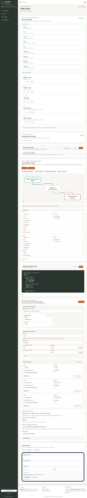
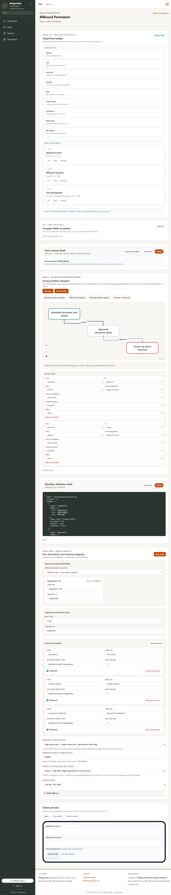

ULB Operator Manual
Nothing matched. Try one word only — for example desk or publish.
Welcome
This manual helps you do your daily work on the computer in eNagarSeba — not how the software is built. You will learn where to click, what each screen is for, and how to set up forms and approval steps for citizen services.
- ULB administrator — sets up services, master lists, fees, and staff. Uses Dashboard (overview), Service Catalogue, Payments, Bookings, Masters, Operations, and Rental Assets.
- Desk officer — opens applications and grievances and moves them forward. Uses Desk most of the day.
If you only process files, start with Desk — daily work. If you configure services, read Building the application form and Setting up approval steps.
Sign in & menu
- Open the link your IT team gave you (ULB Admin / Tenant Admin login page).
- Enter the username and password issued for you. Do not share your password.
- After login, check the left menu. You should see your municipality code (for example KOL) under the logo.
- If your role was changed today (new menu items missing), click Refresh session at the bottom of the menu, then sign in again if asked.

| Menu name | Who usually sees it | What you do there |
|---|---|---|
| Dashboard | ULB administrator | Overview KPIs, payment & booking summaries, trends, SLA breach links |
| Desk | Everyone | Work on citizen applications and grievances |
| Service Catalogue | ULB administrator | Turn services on/off, set SLA days, open Configure for forms |
| Payments | ULB administrator | Unified payment ledger — applications, bookings, rental, EV, water |
| Bookings | ULB administrator | Booking KPIs, recent reservations table, availability calendar |
| Masters | ULB administrator | Keep lists: revenue codes, addresses, departments, grievance types |
| Operations | ULB administrator | Banners, phone number on app, SMS text, staff, bookable assets |
| Rental Assets / Invoices / Documents | ULB administrator | Market stalls, hoardings, lease agreements, rent invoices, document review |
Dashboard
The Dashboard is an overview only — it shows how busy your municipality is and highlights overdue work. Detailed lists (services, payments, bookings) live on their own pages in the left menu.
Summary cards (top)
- Applications — how many citizens applied (total and still open).
- Citizens registered — people who created an account on the citizen app or website.
- Grievances — complaints still open; SLA breached means the complaint is overdue.
If something is overdue, a yellow warning appears with a link — click it to open Desk.
Payment & Booking summaries
Two panels sit below the KPI cards:
- Payment Summary — settled amount (last 30 days), counts by source (application, booking, rental, EV, water), and a link to the full Payments page.
- Booking Summary — upcoming reservations and recent activity, with a link to the full Bookings page.
Trends, workload, and SLA lists
Further down you may see:
- 30-day trends chart (applications submitted) and CSV export buttons for applications, payments, and grievances.
- Top active workload — services with the most open applications (read-only; use Service Catalogue to change settings).
- Breached applications and Breached grievances — click a row to open that case in Desk.
Use Refresh data (top right) after a busy day to reload all panels.
Service Catalogue
Open Service Catalogue in the left menu (or from Dashboard links) to manage every citizen service your ULB offers.
| What you see | What to do |
|---|---|
| Search box | Filter by service name or code. |
| Active tick box | Tick = citizens can apply. Untick = service hidden from citizens (old files still in Desk). |
| SLA days + Save | How many working days you allow before a case is “late”. Example: birth certificate 3 days, trade licence 7 days. |
| Configure | Opens the screen to build the form, approval steps, and fees for that service. |
Long lists are split into pages — use Previous / Next and the page-size control at the bottom of the table.
Payments
The Payments page shows money collected across all channels — not only service applications.
Summary panel
At the top, the same payment KPIs as on the Dashboard (30-day settled total and counts by source).
Tabs
- Ledger — every payment row with date, amount, status, method, citizen, and a deep link to the related application or booking when available.
- By source — totals grouped by application, booking, rental, EV, water.
- By service — totals grouped by service code (application fees).
- Trends — chart of settled payments over the last 30 days.
Filters
On the Ledger tab, use chip filters for source (All, Application, Booking, Rental, EV, Water) and status (All, Settled, Pending, Failed).
Moving through the ledger
The ledger loads in batches. Use Previous and Next at the bottom to move between batches (cursor paging). Breakdown tables on other tabs use standard page numbers when the list is long.
Bookings
The Bookings page is the drill-down for hall, LED board, and health-fleet reservations.
- Booking Summary — full KPI cards and a paginated table of recent reservations (filter by asset type where shown).
- Availability calendar — see blocked slots and confirmed bookings per asset; filter by asset type or a specific asset.
To create assets, edit availability blocks, or run LED/health workflows, go to Operations → Bookings (link at the bottom of this page).
Desk — daily work
Desk is where officers open a citizen’s file and take action — approve, send back, or reject (if your role allows).

Application inbox
At the top of the applications list you can switch between My queue (files waiting on you) and All queues (every open file in the municipality).
Department filter — use the dropdown to limit the list to one or more departments (Health, Licence, etc.). Leave it empty to see all departments. Your choice is remembered in the page address so you can bookmark a filtered view.
Long inboxes are paginated — use Previous / Next and the rows-per-page control at the bottom of the list.
Working on an application
- Click the application row (note the docket number — citizens use this to track status).
- Read the citizen’s answers and open each uploaded document.
- Scroll to History to see who did what earlier.
- Choose an action button (only allowed actions are shown). Add a comment if the system asks you to.
- Click the button to confirm. The file moves to the next officer or back to the citizen.
| Button / action | Meaning in plain language |
|---|---|
| Forward | Send to the next officer in the chain |
| Return | Send back to a previous officer in your department |
| Return for correction | Send back to the citizen to fix mistakes or add documents |
| Reject | Only for department head or Chairperson on some services — closes the case |
After approval
On some services the department head sends a payment link after approval. After payment, your office may create a work order and assign a contractor — follow the buttons on that file.
Grievances (complaints)
Switch to the grievance tab in Desk. Choose My queue, All queues, or SLA breached. The grievance list also paginates when there are many open complaints.
You can assign the complaint to a colleague, change status, and view photos or map location if the citizen attached them.
Rental assets
Use the Rental Assets section in the left menu for market stalls, hoardings, and similar leased property (separate from hall/LED bookings).
| Page | Purpose |
|---|---|
| Rental Assets | Asset register, active leases, and lease actions |
| Invoices | Rent invoices — issue, record payment, track overdue |
| Documents | Uploaded lease agreements and supporting files for review |
Asset and invoice tables paginate when the list is long. The documents page loads in pages from the server — use Previous / Next there as well.
Master data
Masters means “lists we use again and again”. Set these up before you build forms and approval flows. Use the small links on the left inside Masters to change section.
Revenue heads
Each fee must link to a revenue head for government accounts. Fill English/Bangla/Hindi names and the accounting code from your finance section.
Address master
Wards, localities, and pincodes citizens choose from. You can upload a spreadsheet — use dry run first to check errors before saving.
Service catalogue (Masters)
Inside Masters, this list shows metadata for every service (State template vs local). Link each service to the correct department. To turn a service on/off, set SLA days, or open Configure, use the main Service Catalogue item in the left menu instead.
Departments & designations
Department = office unit (Health, Licence, etc.). Designation = job role (Clerk, Officer, Executive Engineer). Mark one person per department as department head. Mark Chairperson for top-level reject rights. Then go to Operations → Staff & roles and attach designations to each login.
Grievance catalogue
Types of complaints citizens can file (street light, water, etc.) and sub-types under each. Use simple English codes without spaces (example: broken-streetlight).
Operations settings
| Section | What you change |
|---|---|
| Banners | Messages on the citizen app (maintenance, holidays) |
| Branding & flags | Helpline phone, email, languages (Bangla/English/Hindi) |
| Templates | Text of SMS or email when a case moves forward |
| Knowledge base | Help articles for the Sahayak chat assistant |
| Branding assets | Upload logo and pictures |
| Bookings | Halls, ambulances, or other bookable facilities |
| Staff & roles | Which officer login gets which designation (needed for Desk queue) |
| Grievance SLA & routing | How many hours before a complaint is “late” |
| Smart Parking | Parking zones, bays, and live occupancy grid (stub sensor) |
| EV Charging | Charger list, per-kWh tariff, and session ledger |
| IoT Water | Prepaid meter accounts, CSV import, recharge ledger |
Prefer the normal form on each page. Use JSON advanced only if IT asks you to — it is easy to make a mistake there.
Bookable facilities (halls, grounds, courts)
Who can use this: ULB administrators only. Desk officers see “Administrator access required” on Operations → Bookings.
- Open Operations → Bookings. On the left, New bookable asset (or edit an existing asset from the list on the right).
- In the card header use New asset to clear the form for another hall or ground, and Save asset when code, name, rates, and open/close times are filled. You need a code (no spaces, e.g. community-hall-main) and Name EN before save works.
- On the right, Bookable assets lists everything active. Click a row to load it into the form (the title changes to “Edit bookable asset · …”).
- Scroll to Bulk generate availability to add weekday open windows (e.g. 09:00–21:00 IST) for a date range.
- The Booking calendar below uses Day hours by default: pick a day, filter by asset, and click a coloured block to pre-fill a manual reservation if needed. Switch to Agenda for a day-grouped list.
- In Service setup for a booking service (e.g. Community Hall, Other Facility Booking): apply Hall & facility booking (replace) on the workflow, then tick which asset codes this service may use in Bookable asset mapping. Save and Publish the workflow.
- Citizens pick an hourly slot in the citizen app, pay fees, and submit; clerks use Desk Review slot → Confirm or Reject. Rejecting releases the slot for others.
Advertising & health fleet (Sprint 8.5)
Who can use this: ULB administrators. Citizens use Services or Applications / Bookings in the citizen app.
Hoarding rate matrix
- Open Operations → Advertising (or Service setup for ad-hoarding). Edit the ward rate matrix: flat fallback rate plus ward-specific rows (max 200 wards).
- Citizens use the hoarding tax calculator (ward × width × height × months). Quotes are informational — payment happens at BOC approval, not at quote time.
- Use Preview quote in admin to verify a ward/size before publishing matrix changes.
LED board slot booking
- Under Operations → Bookings, create LED board assets (asset type LED_BOARD) with hourly rates and availability windows.
- In Service setup for ad-led: apply the hoarding-style workflow, map allowed LED asset codes, and set payment schedule to deferred_only.
- Citizens pick a board and slot, submit creative for scrutiny, and pay the approval fee when the desk issues the payment link.
Health fleet (ambulance & hearse)
- Seed or create AMBULANCE and HEARSE bookable assets under Operations → Bookings. Map them to ambulance / hearse services.
- Citizens see a pooled calendar (unit count, not vehicle names). The system auto-assigns a free unit on hold.
- Emergency ambulance: citizen declares emergency → ₹0 rent, max 2 bookings per citizen per day; audit metadata stored on the reservation. Ops should review flagged emergency rows.
- Hearse BPL: citizen may declare BPL; desk verifies documents before rent waiver. Crematorium booking is deferred — not in this release.
- The Bookings page (left menu) and the dashboard Booking Summary panel show counts and recent rows for hall, LED, ambulance, and hearse together.
Smart city services (parking, EV, water)
Who can use this: ULB administrators. Citizens use the Smart City category in the citizen app for reserve-and-pay flows.
Smart Parking zones
- Open Operations → Smart Parking. Create a zone code (e.g. ZONE-A) with capacity and optional ward.
- Add bays with codes (e.g. B01…B20) or use bulk import. Occupancy comes from the stub sensor plus confirmed reservations.
- Set zone pricing matrix (time bands) in zone metadata or use the flat fallback rate. Citizens see free/taken bays before paying.
- Hold TTL is 10 minutes. Expired holds release the bay automatically.
EV charging tariffs
- Open Operations → EV Charging. Add a charger code, location, connector type, and rate per kWh (paise, e.g. 1500 = ₹15).
- Session hold TTL is 15 minutes. Stub metering bills a fixed kWh on stop until live OCPP is integrated.
- Sessions list is read-only — citizens start/stop from the citizen app.
IoT water meter seeding
- Open Operations → IoT Water. Upsert a meter with meter ID, consumer name, phone (must match citizen OTP mobile), and opening balance.
-
CSV import columns:
meter_id,consumer_name,consumer_phone,balance_paise(optional opening balance). - Recharge ledger shows credited top-ups after citizens pay in the app. Live HMC/SAP meter adapters are deferred.
Setting up a service
- Go to Service Catalogue → find the service in the table → click Configure.
- You will see one long page with: form builder, approval flow, and fees/documents. On the right, Preview shows what the citizen sees.
- Work in order: (1) form, (2) approval flow, (3) fees and document list.
- Each part has Save (keeps a draft) and Publish (goes live for new applications). You must Publish or citizens keep seeing the old version.
If the service was copied from State, use Load State template to copy the state form as a starting point, then adjust for your municipality.
Building the application form
This is what the citizen fills online when applying for a licence, certificate, etc.

Types of questions you can add
| Add this | When to use it | Remember to |
|---|---|---|
| Section heading | Group related questions (“Applicant details”) | Write title in English, Bangla, Hindi |
| Short text | Name, mobile number, ID number | Tick Required if mandatory; set max length |
| Long text | Full address, description | — |
| Number | Quantity, area, amount | Set minimum if zero is not allowed |
| Date | Birth date, event date | — |
| Single choice / Dropdown | Pick one option (trade type, yes/no) | Add each option with labels in all languages |
| Multi select | Pick more than one item | — |
| File upload | PDF or photo the citizen must attach | Set max size (often 5 MB) and allowed types (PDF/JPG) |
Step-by-step: build a trade licence form
- Add a Section titled “Applicant details”.
- Add Short text “Full name” — tick Required.
- Add Short text “Mobile number” — Required, 10 digits.
- Add Dropdown “Trade type” — options General, Food, etc.
- Add File upload “FSSAI certificate” — only for food businesses (see below).
- Click each field and fill English, Bangla, and Hindi labels in the right panel.
- Check Preview on the right — switch language if your ULB uses Bangla on the citizen app.
- Click Save, fix any red error messages, then Publish.
Validation rules (per question)
Click any field in the centre list. The right panel is the Field validation inspector. Rules apply when the citizen submits; hidden questions (see below) are not checked.
| Field type | What you can set | Example |
|---|---|---|
| Short / long text | Required; Min length / Max length; Pattern preset (Mobile 10-digit, Email) or Custom regex | Mobile: required, pattern preset “Mobile (India 10-digit)” |
| Number | Min and Max | Plot area: min 1, max 10000 |
| Date |
Min date and Max date (calendar,
YYYY-MM-DD)
|
Event date cannot be before today (set min date) |
| Single choice / dropdown / radio | Options with value + labels; Required |
Trade type: values general, food, retail
|
| Multi select | Same as choice; used with “includes” visibility (below) | Amenities: citizen picks several tags |
| File upload | Allowed types (PDF/JPG), max size (MB), multiple files on/off | FSSAI PDF only, max 5 MB |
Field ID is the internal name (lowercase, no spaces). It must stay stable after citizens have applied — do not rename IDs on a live service without IT guidance.
Conditional visibility (“Show only when”)
In the same inspector, tick Show only when another field matches. The question appears only when the rule is true; when hidden it is not required and answers are ignored.
| Condition (on screen) | Use when | Worked example |
|---|---|---|
| Equals one value | Dropdown, radio, short text, or number must match exactly |
Controlling field trade_type, value food → show file
upload
fssai_certificate
|
| Equals any of (OR) | Show when the controlling field is one of several values |
trade_type is food OR retail → show
shop_photo (tick both values in the checklist)
|
| Includes one option | Only when the controlling field is multi-select |
amenities includes generator → show
generator_noc
|
| Is not empty | Any answer on the controlling field (text, number, choice) |
After citizen fills business_name, show optional
trade_name_variant
|
JSON example — conditional field (for IT / advanced)
{
"id": "fssai_certificate",
"type": "file",
"label": { "en": "FSSAI certificate", "bn": "…", "hi": "…" },
"required": true,
"accept": ["application/pdf"],
"max_size_mb": 5,
"show_if": {
"field": "trade_type",
"equals": "food"
}
}
JSON example — show when any of several values (OR)
{
"id": "shop_photo",
"type": "file",
"show_if": {
"field": "trade_type",
"equals_any": ["food", "retail"]
}
}
Cross-field rules (compare two answers)
Below the form builder, open Compare fields on submit ( Cross-field rules). Use this when one answer must relate to another — not for simple “required” checks (use per-field validation above).
- Click Add rule.
- Choose Left field and Right field (field IDs from your form).
- Compare: After = left date/number must be later than right; On or after, Before, On or before, or Equals for matching values.
- Type Error message EN citizens see if the rule fails (e.g. “End date must be on or after start date”).
-
Optional: tick Only when another field matches so the rule runs only
in some cases (e.g. only when
has_eventequalsyes). - Save the form, fix red errors, then Publish.
| Goal | Left | Compare | Right |
|---|---|---|---|
| End date not before start | event_end_date |
On or after | event_start_date |
| Guests within hall capacity | guest_count |
On or before | hall_capacity |
| Refund amount equals deposit | refund_amount |
Equals | deposit_amount |
JSON example — cross-field rule (for IT / advanced)
{
"cross_field_rules": [
{
"id": "end_after_start",
"left": "event_end_date",
"op": "gte_field",
"right": "event_start_date",
"message": {
"en": "End date must be on or after the start date.",
"bn": "…",
"hi": "…"
}
}
]
}
Importing a form from Excel, Word, or PDF
If you already have the application form in a spreadsheet or document, you can upload it instead of typing every question by hand. The system proposes fields for you to review — it does not publish automatically.
What you can upload
| File type | Use when |
|---|---|
Excel .xlsx (column table) |
One row per field with columns for key, label, type — most accurate |
Excel .xlsx (grid / layout) |
Your paper form layout in cells; a yellow banner warns you to check carefully |
Word .docx (table) |
Form is a Word table with field definitions |
| PDF (fillable or typed text) | Official PDF with form fields or clear typed labels |
| Handwritten scan | Not supported — use Excel or rebuild in the builder |
Steps
- Choose your file and click Upload and analyse.
- Wait until status shows Completed (large files may show Pending briefly).
- Review the proposed fields — uncheck wrong rows; fix labels if needed.
- Click Apply to draft only when you agree with the list.
- Open the form builder: add sections, Bangla/Hindi labels, and validation rules.
- Save and Publish after your own review.
Full checklist and troubleshooting:
docs/runbooks/form-import-operator-guide.md (for IT staff).
Setting up approval steps
The approval flow decides which officer sees the file in Desk and in what order. Set up departments and designations in Masters first, and assign them to staff in Operations.

Words on the approval screen
| On screen | Plain meaning |
|---|---|
| Stage / step | One stop in the journey (Clerk review, Officer approval, …) |
| Initial | Where the citizen starts (draft application) |
| Terminal / Done | Case finished (approved or closed) |
| Owner designation | Which job role’s Desk queue receives the file |
| Forward / Return | Buttons officers use — you draw these as arrows between steps |
Easy way: use a template button
- Hoarding scrutiny — advertising / hoarding department chain.
- Municipal ladder — large projects: Executive Officer → senior council levels → Chairperson.
- PWD works — public works style chain.
After applying a template, rename steps to match your ULB and check each arrow points to the correct next officer.
Board of Councillors (BOC)
Some services need a BOC meeting decision. Set BOC policy in the fees section (never / always / officer may decide). Only add BOC steps when your municipality rules require it.
Hall and facility booking services
For community hall, auditorium, or sports-ground booking, use the Hall & facility booking (replace) template on the service workflow page. Stages include citizen submitted, clerk review-slot, then confirmed or rejected. After applying the template:
- Map assets in Bookable asset mapping (which halls/grounds this service may book).
- Save and Publish the workflow — mapping stays hidden until the booking pattern is active.
- Desk officers use Review slot on the dossier, then Confirm (locks the slot) or Reject (frees the hour for other citizens).
Save and publish the flow
- Fix any red error text under the approval diagram.
- Click Save on the workflow section.
- Click Publish.
- Ask a colleague to log in to Desk and confirm the test file appears in their queue.
Fees & documents
When does the citizen pay?
- Upfront only — pay when applying.
- Deferred only — pay after approval (department head sends payment link).
- Both — application fee plus a later licence fee.
Fee types
| Type | Meaning |
|---|---|
| Free | No payment |
| Fixed | Same amount for everyone (enter rupees) |
| Slab | Different amount by choice on the form (e.g. trade type) |
| Computed | Base fee plus per-unit charge (e.g. per square metre) |
Document checklist
List each paper the citizen must upload (Aadhaar, site plan, etc.). Say if it is mandatory and which file types are allowed (usually PDF or JPG, max 5 MB).
Other policies on this screen
- Revenue head — pick from Masters list.
- Municipal sign-off — for high-value work, senior council approval; set threshold in rupees.
Click Save at the bottom of the configuration section when finished.
Words we use
- Docket number
- The application reference citizens quote at the counter (example: TL-2026-00421).
- Designation
- Job role name in the system (Clerk, Licence Officer) — decides whose Desk queue shows the file.
- Publish
- Make your draft live. Until you publish, citizens still see the old form or old approval steps.
- SLA
- Time limit you promised to finish a case. “Breached” means overdue.
- BOC
- Board of Councillors — special meeting approval for some cases.
- ULB
- Your urban local body / municipality.
- State template
- Ready-made service from the state government library — you can adjust it for your town.
- Service Catalogue
- Left-menu page to activate services, set SLA days, and open Configure — moved off the Dashboard overview.
- Payment ledger
- Unified list of settled and pending payments (applications, bookings, rental, EV, water) on the Payments page.
- Bookable asset
- A hall, ground, or facility with hourly slots (code, rates, open hours). Created in Operations → Bookings, then linked to a booking service.
- Review slot
- Desk action for booking applications: officer checks the reserved hour before Confirm or Reject.
- Show only when
- Conditional visibility — a form question appears only when another answer matches your rule.
Common problems
| What happened | What to try |
|---|---|
| Kicked out to login | Session timed out — sign in again. Do not leave the PC unlocked. |
| Cannot see Dashboard | Your login is Desk-only — ask administrator for admin rights. |
| Save form fails | Red message on screen — usually a missing label or duplicate question name. Fix and Save again. |
| Publish fails | Save first; read error text; call IT if it mentions “workflow” or “validation”. |
| Table shows only 25 rows | Use Next at the bottom of the table, or open the dedicated page (Service Catalogue, Payments, Bookings, Desk inbox, Rental) for the full list. |
| Desk queue empty | Your designation may not be assigned — check Operations → Staff & roles. |
| Citizen still sees old form | You saved but did not Publish the form. |
| Wrong fee amount | Check fee type and which form question drives “slab” fees; amounts are in rupees on screen. |
| Bookable asset save failed | Fill Code and Name EN; check the status line at the top of Operations. Use header Save asset, not only JSON fallback. |
| Conditional field always hidden |
Check controlling field ID and value match option value (not the
English label). For dropdowns use Equals one value, not Includes.
|
For anything not listed, note the exact message on screen and the service name, then contact your ULB IT support.